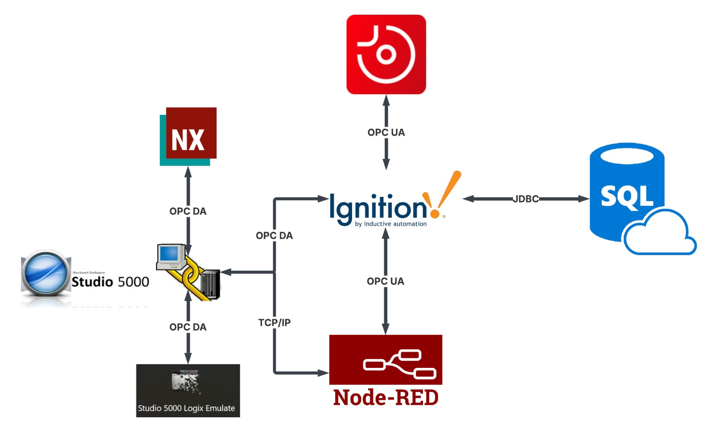

La integración de las diferentes herramientas desarrolladas durante el proyecto se realizó mediante una arquitectura de comunicaciones que permite el intercambio de información entre el PLC, el gemelo digital, la celda robotizada, el sistema SCADA, la plataforma MES y los servicios en la nube. Esta infraestructura garantiza la sincronización de datos, el monitoreo en tiempo real y la interoperabilidad entre los diferentes componentes que conforman la solución de Industria 4.0.
El siguiente diagrama resume la arquitectura de comunicación implementada en el proyecto, mostrando los protocolos, dispositivos y plataformas involucradas en el intercambio de información entre los diferentes sistemas que conforman la solución.
